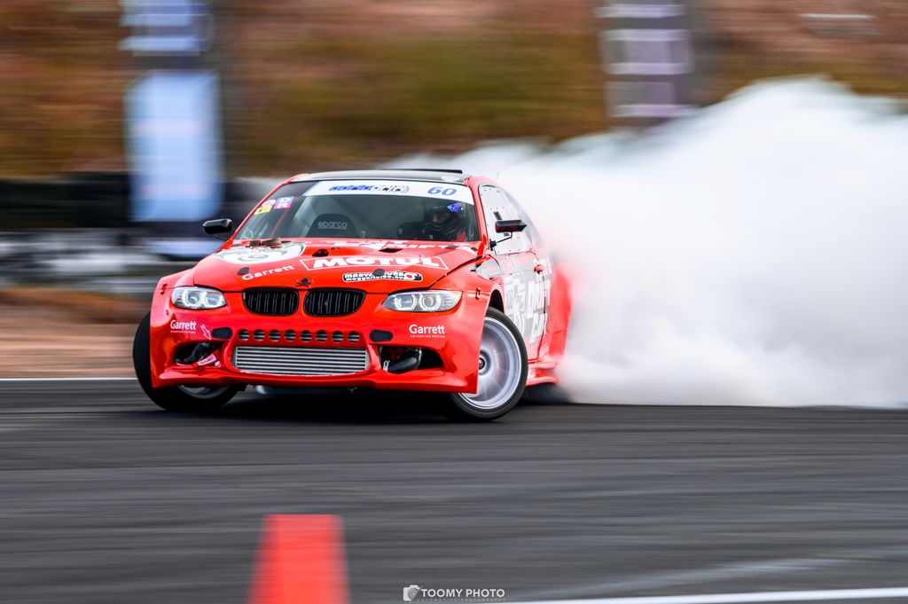
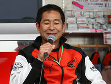

Welcome to Drift World!
Drifting is FUN!
It's always fun to see a drift car doing many trick to impress the crowd. What is the real meaning of drifting? Drifting is the act or activity of steering an automobile so that it makes a controlled skid sideways through a turn with the front wheels pointed in a direction opposite to that of the turn
The History

Drifting began in the early 1980s with a Japanese race-car driver named Keiichi Tsuchiya. Mr. Tsuchiya, who was in his 20s, started
experimenting with drifting and practiced it on curvy roads deep in the mountains near his
hometown. He says he was perfecting his ability to not spin out
on curves in car races.

Formula Drft
Formula D or Formula DRIFT Black Magic Pro Championship Presented by BlackVue Dash Cameras is the premier United States-based drifting series. Formula Drift, Inc. was co-founded by Jim Liaw and Ryan Sage in 2003 as a sister company to the now defunct Slipstream Global Marketing, the same partnership that introduced D1 Grand Prix to the United States. The new entity would solely own, operate and launch the first official drifting series in North America. 2018 was Formula Drift's fifteenth year of competition
Source : Wikipedia